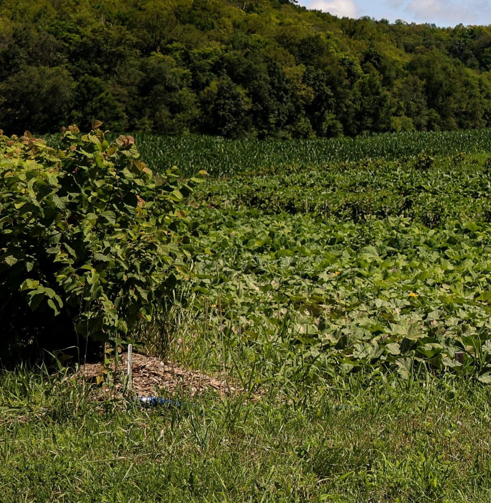
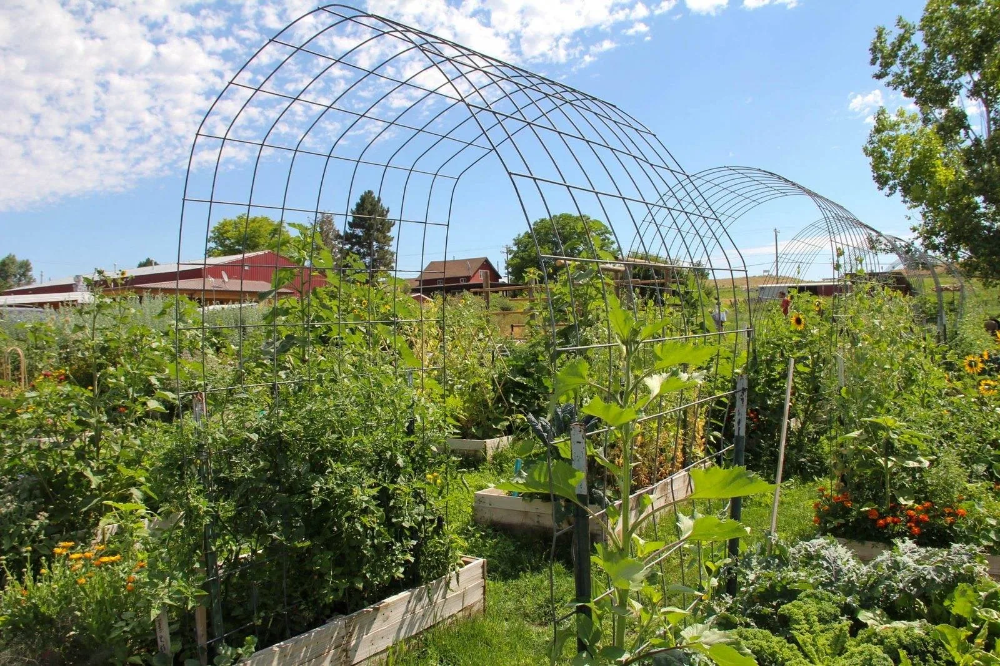
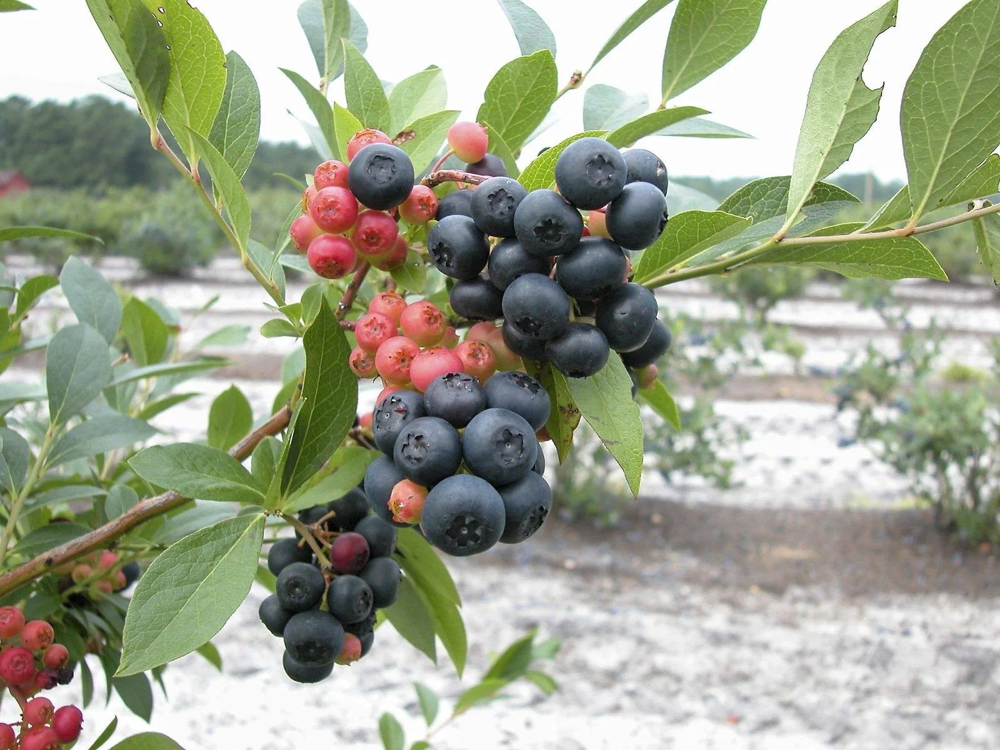
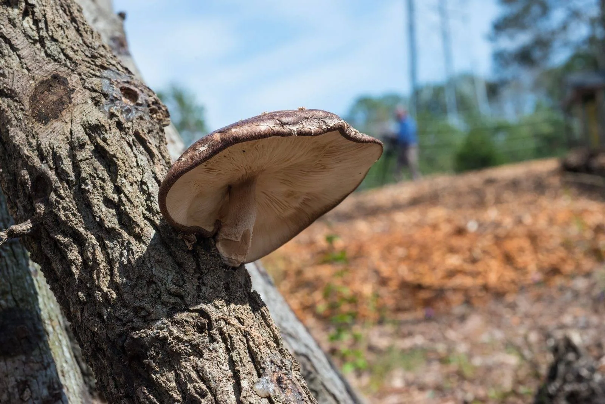
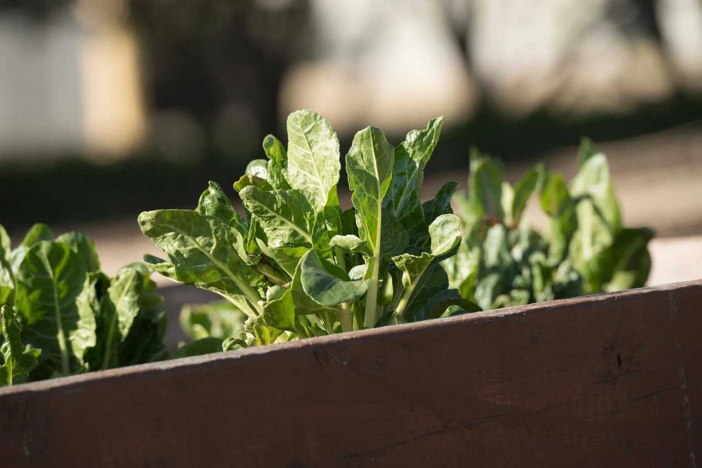

★★★★★
“Great work at a fair price. They did what they said they were going to do, when they said they would do it. Fast, friendly. Will definitely use them again.”Richard Hansen

Home / Services / Food Forests & Edible Landscaping
Food forests, orchards and kitchen gardens
A yard that feeds you. Terramorph designs and installs food forests, fruit and nut trees, berry patches, kitchen gardens and raised beds, with varieties and pollination partners chosen for Northwest Ohio's zone 6b and clay.
4.9★★★★★220+ Google reviewsReference photo, not a Terramorph project. Photo: Krisann McElvain, USDA NRCS (public domain)
Great work at a fair price. They did what they said they were going to do, when they said they would do it.Richard Hansen
A lot of companies tell you what they are going to do. This company far exceeded their word.jon mercurio
Attention to detail was 2nd to none!Adam Raider
They did an excellent job and completed the same day. I would highly recommend them.Teresa Thompson
10/10 Company, the boys made my house look great. Customer Service is great, best deal on the market.Alejandro Urrea
Great work very accommodating and extremely professional will definitely have them do all my future work.Pete Detgen
Great, professional group of guys!Josh Johnson
They did a fantastic job for me. I will recommend them to colleagues.Dominic Urquiola
Fast and reliable. Ty did excellent work and very reasonable cost. I would not hesitate to suggest him to others.Larry Calcamuggio
Amazing service every time and prompt to all appointments.CJ Miller
Sound familiar?
What you get
A yard that feeds you
A food forest is a planting designed like a woodland edge, except most of what grows in it is edible: fruit and nut trees overhead, berry shrubs below, herbs and perennial vegetables underneath, and ground covers holding the soil. Once established, it keeps producing year after year with far less work than an annual vegetable garden. Not every yard needs a full forest. Many projects are a few fruit trees with companion plantings, a berry hedge, or a set of raised kitchen beds by the back door.

02What we build
Each piece can stand alone or be part of a bigger permaculture design.

03Trees that grow here
Perrysburg and Toledo are in USDA zone 6b (2023 map). The biggest mistakes we see aren't the wrong tree, they're missing pollination partners and wet planting spots. Here is what we plan for.

04The layers
Food forests are often described in seven layers, a model developed by English gardener Robert Hart when he turned a small apple and pear orchard into a layered edible landscape.
Around each tree we build a "guild" of companions that each do a job: nitrogen fixers like clover, flowers that bring in pollinators, bulbs that hold back grass, and mulch plants like comfrey.
Front yards
An edible landscape can be the best-looking yard on the street. Blueberries have great fall color, serviceberry flowers early, and a fruit tree with a neat mulched guild looks intentional. In front yards we keep clean edges, a clear layout and plants that look good in winter too.

06Cost and harvest
Cost depends on the number and size of trees, how much soil prep and drainage work the site needs, and how many layers you want planted at once. Many clients start with trees and shrubs (the slow growers) and add the lower layers later. We give a free estimate with a phased plan. Harvest timing is honest.
Care
Fruit trees need establishment watering, mulch, protection from deer and rabbits, and pruning while they are young. We plant with tree guards where needed and offer care plans for watering, pruning and mulch.
Where we work
Food forests, fruit trees and kitchen gardens across Perrysburg, Toledo, Maumee, Sylvania, Waterville, Whitehouse, Holland, Monclova, Rossford, Oregon, Bowling Green and the rest of Wood and Lucas County. Free estimates: 419-873-6801. Also see native habitat and natural ponds and pools.
How we work
Homeowners need to know what happens next: Terramorph reviews the property, talks through the goal, explains practical options, and gives a clear estimate before work begins.
City, goal, frustration, timeline, range, and photos captured quickly.
Grade, water flow, access, soil, sun, materials, and maintenance expectations.
Clear options that connect budget to property improvement and long-term durability.
Professional install, cleanup, walkthrough, and follow-up.
Reviews
“Great work at a fair price. They did what they said they were going to do, when they said they would do it. Fast, friendly. Will definitely use them again.”Richard Hansen
“A lot of companies tell you what they are going to do. This company far exceeded their word.”jon mercurio
“We are absolutely thrilled with the work Brad and his team completed! They completely redesigned our flower beds, providing us with a potential layout drawing, guiding us in selecting the right flowers, and executing everything perfectly. Besides the excellent craftsmanship, Brad and his team are genuinely kind and considerate.”Kate Vallerand
Questions homeowners ask
Still wondering about something? Call 419-873-6801, 7 a.m. to 8 p.m.
It depends on the number and size of trees and shrubs, soil and drainage prep, and how many layers you plant at once. Terramorph gives a free estimate and can phase the project, starting with trees and shrubs and adding lower layers later.
In our zone 6b climate, apples and pears (with a pollination partner), pawpaw, American persimmon, serviceberry and elderberry all do well when planted in well-drained spots. We pick varieties for your soil and space.
Hazelnuts and chestnuts are good choices for home plantings. Both need at least two compatible plants for pollination, and for chestnuts we use Chinese or blight-resistant hybrid trees.
Vegetables and herbs produce the first season. Berries like elderberry give a light crop in the second year and a full crop by years three to four. Grafted pawpaw and persimmon trees often take three to six years.
Less than most people think. A small yard can hold a couple of fruit trees with companion plants, a berry hedge and raised beds. Larger lots can hold a full layered food forest.
A guild is a group of plants placed around a fruit tree where each one helps: nitrogen fixers like clover, flowers that attract pollinators, bulbs that hold back grass, and mulch plants like comfrey.
A food forest is a layered edible planting. Permaculture is the bigger design approach for the whole property, including water, soil, habitat and how you use the space. A food forest is often one part of a permaculture design.
Yes. We design and build raised beds and vegetable gardens, fill them with quality soil, and place them close to the house where they're easy to use and water.
They can. We use tree guards and fencing where needed, and choose and place plants to reduce browsing.
Yes. We offer care plans for establishment watering, mulching and pruning so young trees get off to a strong start.
Terramorph at a glance
Terramorph LLC is a landscape design and build company based in Perrysburg, Ohio, founded by brothers Ty and Trent Lincoln. We handle food forests and edible landscaping along with patios, drainage, landscape beds, lighting, lawn care, cleanups, and snow removal for homes and businesses across Wood and Lucas County. 4.9 stars from more than 220 Google reviews, BBB accredited, and estimates are free.
Keep reading
Project savings
The bigger the project, the more you save. Mention your code when you request your quote or approve your estimate.
Request My Quote| Your project | You save | Use code |
|---|---|---|
| $10,000 or more | 10% | Y2H1N |
| $8,000 or more | 8% | 7U5C1 |
| $6,000 or more | 6% | 8B2M3 |
| $5,000 or more | 5% | 0O6B2 |
Applies to all Terramorph services. One code per project, based on the project total before tax. Mention the code when you request your quote or before you approve your estimate. Can't be combined with other offers or applied to work already invoiced.

Free estimate
Free estimate
Send project details through the quote form, or call directly for urgent service questions and scheduling.
Call now or jump straight to the quote request form.